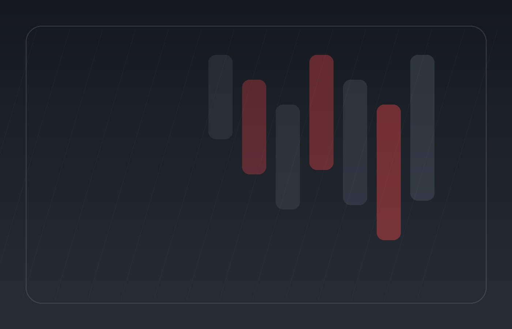

Before arrival
Confirm appointment time, preparation guidance and anything the team asks you to bring.
AUTOMOTIVE
Make the visit predictable before someone arrives: location, timing, preparation, accessibility and what happens next.
PLAN THE VISIT
Confirm appointment time, preparation guidance and anything the team asks you to bring.
Publish verified parking, entry and check-in details so visitors know where to go.
Explain the expected flow from check-in through service, questions and payment.
Give visitors a clear route for aftercare questions, follow-up or their next appointment.

Confirm timing and any preparation instructions.
Use only verified parking, entry and check-in details.
Publish a direct route for accommodation questions.
Make cancellation, lateness and payment policies easy to find.

BEFORE YOU GO
The production site should only publish real address, parking, hours and accessibility information.
NEXT STEP
Share the details that matter so the team can respond with the right next step.